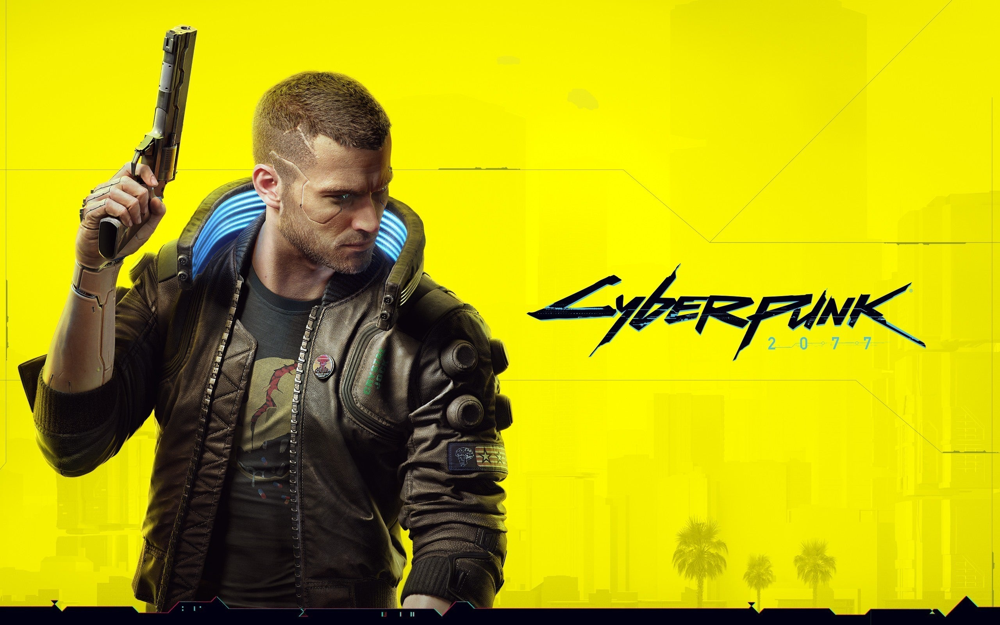

The origins of cyberpunk are rooted in the New Wave science fiction movement of the 1960s and 1970s, where New Worlds, under the editorship of Michael Moorcock, began inviting and encouraging stories that examined new writing styles, techniques, and archetypes. Reacting to conventional storytelling, New Wave authors attempted to present a world where society coped with a constant upheaval of new technology and culture, generally with dystopian outcomes. Writers like Roger Zelazny, J. G. Ballard, Philip José Farmer, Samuel R. Delany, and Harlan Ellison often examined the impact of drug culture, technology, and the ongoing sexual revolution, drawing themes and influence from experimental literature of Beat Generation authors such as William S. Burroughs, and art movements like Dadaism.
The streets of Night City are filled with mercenaries, hackers, and corporate defectors, all chasing after the elusive promise of wealth, whether through legal means or by any means necessary. The relentless pursuit of money becomes a driving force in the lives of the city’s inhabitants, with the knowledge that in this world, wealth can either offer freedom or destroy everything in its path.
The term "cyberpunk" first appeared as the title of a short story by Bruce Bethke, written in 1980 and published in Amazing Stories in 1983. The name was picked up by Gardner Dozois, editor of Isaac Asimov's Science Fiction Magazine, and popularized in his editorials. Bookending the cyberpunk era, Bethke himself published a novel in 1995 called Headcrash, like Snow Crash a satirical attack on the genre's excesses. Fittingly, it won an honor named after cyberpunk's spiritual founder, the Philip K. Dick Award. It satirized the genre in this way:

Cyberpunk 2077 traces its origins back to the 1980s and 1990s with the release of the tabletop role-playing game Cyberpunk 2020, created by Mike Pondsmith. This game introduced players to a gritty, dystopian future filled with cybernetic enhancements, mega-corporations, and anti-heroes. It became a cult classic, laying the groundwork for the Cyberpunk universe.
In May 2012, CD Projekt Red, known for their critically acclaimed Witcher series, announced they were working on a new game set in the Cyberpunk universe. The initial reveal generated excitement, promising a vast open world, deep narrative, and futuristic gameplay inspired by Pondsmith’s creation.
The first teaser trailer for Cyberpunk 2077 was released in January 2013, showcasing a cinematic vision of the game's dark, high-tech world. The trailer featured a cybernetically enhanced woman being subdued by police, highlighting the game’s themes of technology, crime, and rebellion. Fans were immediately captivated.
After years of silence, CD Projekt Red unveiled a 48-minute gameplay demo at E3 2018. This was the first time fans saw the game in action, with its detailed world of Night City, customizable protagonist V, and immersive RPG elements. The demo set a new standard for open-world games, further raising anticipation.
At E3 2019, Keanu Reeves was revealed as Johnny Silverhand, a central character in the game. His appearance on stage, coupled with the iconic line “You’re breathtaking,” became a defining moment in the game’s promotional history. A new trailer also confirmed a release date for April 16, 2020.
After multiple delays, Cyberpunk 2077 was finally released on December 10, 2020. The launch was one of the most highly anticipated in gaming history. However, the release was marred by technical issues, especially on older consoles, leading to widespread criticism and refunds. Despite this, the game sold over 13 million copies in its first month.
In response to the backlash, CD Projekt Red worked tirelessly to address the game's issues, releasing multiple patches and updates. By mid-2022, the game had undergone significant improvements, restoring faith among players and critics. A Netflix anime series, Cyberpunk: Edgerunners, also boosted the game’s popularity, drawing in new fans.
In September 2023, Cyberpunk 2077 received its first major expansion, Phantom Liberty. This expansion introduced a new storyline, characters, and gameplay improvements, earning praise for its refined mechanics and gripping narrative. It marked a turning point in the game’s legacy, showcasing its full potential.
With the success of Phantom Liberty, CD Projekt Red announced plans for a sequel, ensuring the Cyberpunk universe will continue to evolve. The game's journey from troubled launch to redemption has solidified its place in gaming history as a story of resilience and ambition.
William Gibson with his novel Neuromancer (1984) is arguably the most famous writer connected with the term cyberpunk. He emphasized style, a fascination with surfaces, and atmosphere over traditional science-fiction tropes. Regarded as ground-breaking and sometimes as "the archetypal cyberpunk work", Neuromancer was awarded the Hugo, Nebula, and Philip K. Dick Awards. Count Zero (1986) and Mona Lisa Overdrive (1988) followed after Gibson's popular debut novel. According to the Jargon File, "Gibson's near-total ignorance of computers and the present-day hacker culture enabled him to speculate about the role of computers and hackers in the future in ways hackers have since found both irritatingly naïve and tremendously stimulating.